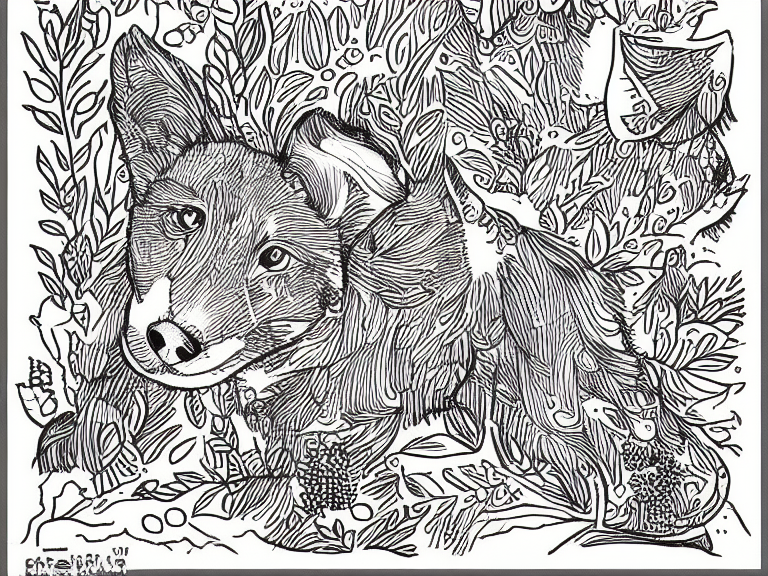

Kannst Du Deinem Hund auch mit natürlichen Mitteln helfen, ohne gleich zur chemischen Keule greifen zu müssen? Die Antwort ist: Ja, oft schon! Viele bewährte Hausmittel aus der Küche oder der Naturheilkunde können Deinem Vierbeiner bei leichten Beschwerden wie Durchfall, Erbrechen, Juckreiz oder Insektenstichen helfen – und das ganz ohne Nebenwirkungen.
Wichtig vorweg: Hausmittel ersetzen keinen Tierarztbesuch! Bei schweren oder länger anhaltenden Symptomen, starken Schmerzen, Fressunlust über 24 Stunden oder blutigem Durchfall musst Du sofort zum Tierarzt. Aber für die alltäglichen Wehwehchen – mal ein empfindlicher Magen, ein Insektenstich oder eine kleine Verletzung – haben wir hier die besten natürlichen Helfer für Dich zusammengestellt.
🌿 Die 5 besten Hausmittel für Hunde
Hier kommen die fünf wichtigsten Hausmittel, die in keinem hundefreundlichen Haushalt fehlen sollten. Sie sind günstig, einfach anzuwenden und haben sich über Generationen bewährt.
1. Kurkuma – Das goldene Gewürz für Gelenke & Immunsystem
Kurkuma (Gelbwurz) ist ein echtes Superfood für Hunde. Der enthaltene Wirkstoff Curcumin wirkt entzündungshemmend, antioxidativ und kann bei Gelenkproblemen, Arthritis oder allgemeiner Entzündungsneigung helfen. Du kannst eine kleine Prise (ca. 1/4 Teelöffel für einen mittelgroßen Hund) unter das Futter mischen. Wichtig: Kurkuma sollte immer zusammen mit einer Prise schwarzem Pfeffer und etwas Öl (z. B. Kokosöl) gegeben werden – erst dann kann der Körper das Curcumin aufnehmen. Starte mit einer kleinen Menge und beobachte die Verträglichkeit.
2. Kokosöl – Für Haut, Fell und Verdauung
Natives Kokosöl ist ein echter Allrounder unter den Hausmitteln. Es enthält mittelkettige Fettsäuren, die antibakteriell und antiviral wirken können. Äußerlich angewendet hilft Kokosöl bei trockener Haut, entzündeten Pfoten oder kleinen Hautirritationen – einfach eine dünne Schicht auftragen. Innerlich (1 Teelöffel pro 10 kg Körpergewicht, untergemischt ins Futter) kann es die Verdauung unterstützen, das Fell zum Glänzen bringen und sogar Mundgeruch mildern. Viele Hunde lieben den Geschmack von Kokosöl – es ist also ein echtes „Leckerli mit Nebeneffekt".
📢 Google AdSense
Anzeige
3. Kamillentee – Sanfte Hilfe bei Magen-Darm-Beschwerden
Kamillentee wirkt krampflösend, entzündungshemmend und beruhigend – und das nicht nur bei uns Menschen. Bei leichtem Durchfall, Magengrummeln oder nach einer Futterumstellung kannst Du Deinem Hund abgekühlten, ungesüßten Kamillentee anbieten. Einfach einen Teebeutel 5 Minuten ziehen lassen, abkühlen lassen auf lauwarme Temperatur und in den Wassernapf geben. Bei Durchfall: 1–2 Esslöffel über das Futter geben. Kamillentee ist absolut unbedenklich und kann auch bei Welpen angewendet werden.
4. Flohsamenschalen – Der natürliche Durchfall-Stopper
Flohsamenschalen sind ein wahres Wundermittel aus der Natur. Sie quellen im Darm auf, binden überschüssiges Wasser und regulieren so den Stuhlgang – sowohl bei Durchfall als auch bei Verstopfung. Einfach 1 Teelöffel Flohsamenschalen (für einen mittelgroßen Hund) mit etwas Wasser verrühren, 5 Minuten quellen lassen und dann unter das Futter mischen. Achtung: Dein Hund muss ausreichend trinken, sonst kann die Masse im Darm verklumpen. Flohsamenschalen eignen sich hervorragend als sanfte Hilfe bei akutem Durchfall – besonders, wenn der Hund nichts Fests zu sich nehmen kann.
5. Kühlende Umschläge bei Insektenstichen & kleinen Verletzungen
Ein Insektenstich an der Schnauze oder Pfote kann für Deinen Hund sehr unangenehm sein. Ein einfacher, kühlender Umschlag hilft sofort: Wickle einen Eiswürfel oder ein Kühlpad in ein dünnes Tuch und lege es für 5–10 Minuten auf die betroffene Stelle. Alternativ hilft ein in kaltes Wasser getauchter Waschlappen. Bei starkem Juckreiz oder Schwellung kannst Du auch etwas Quark auf ein Tuch streichen und auflegen – Quark kühlt und wirkt entzündungshemmend. Wichtig: Deinen Hund nicht vom Eis direkt ablecken lassen – das kann zu Magenverstimmungen führen.

🛒 Naturprodukte für Hunde auf Amazon.de
Kokosöl, Flohsamenschalen, Kurkuma-Präparate und Pflegeprodukte für die natürliche Hundegesundheit. (Affiliate-Link)
⚠️ Wann musst Du zum Tierarzt? – Notfall-Check
So hilfreich Hausmittel auch sind – sie haben ihre Grenzen. In folgenden Fällen ist ein Tierarztbesuch dringend notwendig:
- Blutiger Durchfall oder Erbrechen (Blut ist immer ein Alarmzeichen)
- Durchfall oder Erbrechen länger als 24 Stunden (Dein Hund droht auszutrocknen)
- Völlige Fressunlust über 24 Stunden (besonders bei kleinen Hunden gefährlich)
- Starke Schmerzen (Jaulen, Zittern, gekrümmte Körperhaltung, Wegducken)
- Aufgeblähter, harter Bauch (Verdacht auf Magendrehung – Lebensgefahr!)
- Atemnot, starkes Hecheln oder bläuliche Zunge (sofort zum Tierarzt)
- Vergiftungsverdacht (Schokolade, Giftköder, Reinigungsmittel – sofort in die Klinik)
- Große, offene Wunden oder stark blutende Verletzungen
- Fremdkörper im Maul oder Rachen, wenn Dein Hund nicht schlucken kann
Wenn Du unsicher bist: Lieber einmal zu viel zum Tierarzt als einmal zu wenig. Die Kosten einer Untersuchung sind nichts im Vergleich zu Deiner Seelenruhe – und im Zweifel kann eine frühe Behandlung Leben retten. Speicher die Telefonnummer Deiner Tierarztpraxis und einer tierärztlichen Notdienstnummer am besten gleich im Handy ein.
📢 Google AdSense
Anzeige
💚 Fazit – Natürlich helfen mit Köpfchen
Hausmittel für Hunde sind eine wunderbare Möglichkeit, leichte Beschwerden sanft zu behandeln und die Gesundheit Deines Vierbeiners zu unterstützen. Kurkuma, Kokosöl, Kamillentee, Flohsamenschalen und kühlende Umschläge gehören in jede „Hunde-Hausapotheke". Sie sind kostengünstig, meist gut verträglich und haben kaum Nebenwirkungen.
Trotzdem gilt: Beobachte Deinen Hund genau und zögere nicht, einen Tierarzt zu konsultieren, wenn die Symptome schwerwiegend sind oder länger anhalten. Hausmittel sind eine Ergänzung, aber kein Ersatz für die moderne Tiermedizin. Mit der richtigen Balance aus natürlicher Fürsorge und medizinischer Versorgung gibst Du Deinem Hund die beste Gesundheit für ein langes, glückliches Leben.
Dein Hund wird es Dir mit einem wedelnden Schwanz und vielen kuscheligen Stunden danken!
🛒 Erste-Hilfe-Set für Hunde auf Amazon.de
Verbandsmaterial, Wunddesinfektion, Zeckenzangen und natürliche Pflegeprodukte für die Hundegesundheit. (Affiliate-Link)
📢 Google AdSense
Anzeige